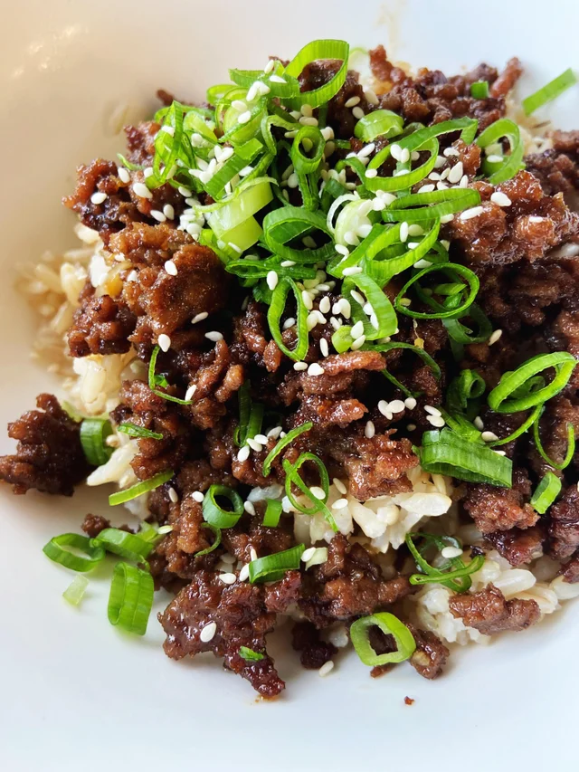

Korean Beef Bulgogi Bowl

Simple and fast weeknight dinner you'll
love adding to your rotation
Love Korean food? Love garlic and onions? Then
look no further. This simple recipe uses just a
few ingredients that pack all the flavor
with easy to follow directions.
Ingredients
- 1 pound ground beef
- 1 onion, diced
- 10 garlic cloves, diced
- 2 tbsp sugar
- 2 tbsp mirin
- 4 tbsp shoyu/soy sauce
- 1/2 tsp pepper
- Cooking oil of choice
- 1 tbsp sesame oil
- 2 tbsp lightly toasted sesame seeds
Optional toppings
- Green onions, sliced
- Sesame seeds, lightly toasted
Steps
- Dice onion and garlic
- Add meat, onion, garlic, sugar, mirin,
shoyu and pepper to a bowl. Mix thoroughly
using hands, similar to mixing meatloaf
ingredients
- Cook on medium high with a little bit of
oil
- Cook until liquid is fully reduced and cooked
down. Stir in sesame oil andd sesame seeds
- Once fully cooked, add any optional toppings
and enjoy over rice and/or veggies of choice!